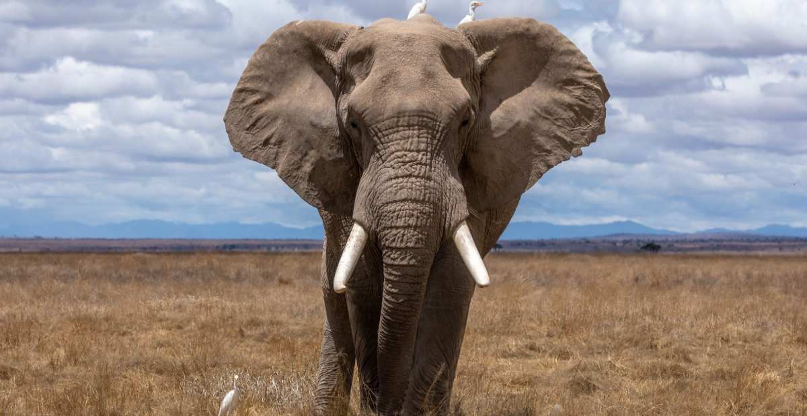
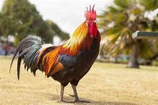
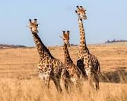
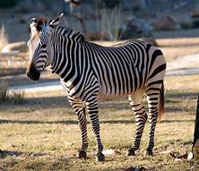
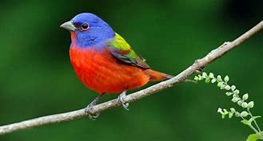

GAJAH
2007
Distribusi geografis gajah Asia Gajah Asia tersebar merata di daratan dan beberapa wilayah pulau. Penyebaran masing-masing subspesies gajah asia mengikuti faktor lingkungan dan geografis
KOALA
2007

Koala (Phascolarctos cinereus) adalah salah satu binatang berkantung (marsupial) khas dari Australia dan merupakan wakil satu-satunya dari keluarga Phascolarctidae. Kata koala berasal dari bahasa Dharug, salah satu bahasa Australia pribumi yang berarti tidak ada air atau dapat juga diartikan tidak minum.
AYAM
2007
ayam adalah binatang unggas dari ordo dalliformes yang biasa dipelihara untuk dimanfaatkan daging.
PANDA
2007
panda adlah salah atu hewan yang berbandingan ukuran induk dan bayinya paling ekstrim. nama ilmiah panda adalah ailuropoda melanoleuca yang berarti kaki kucing berwarna hitam putih
JERAPAH
2007
jerapah dalah mamalia berkuku besar afrika yang termasuk dalam geunus giraffah. inni adalah hewan darat tertinggi yang masih hidup dan permamah biak terbesar dibumi.
About Me
NAMA: CARIN ROSALINDA
halo saya pemilik website ini jika anda mau mempelajari tentang hewan maka ikuti saja website ini karena website ini dilengkapi tentang hewan dan deskripsiannya.
Popular Post



Follow Me
CARIN ROSALINDA